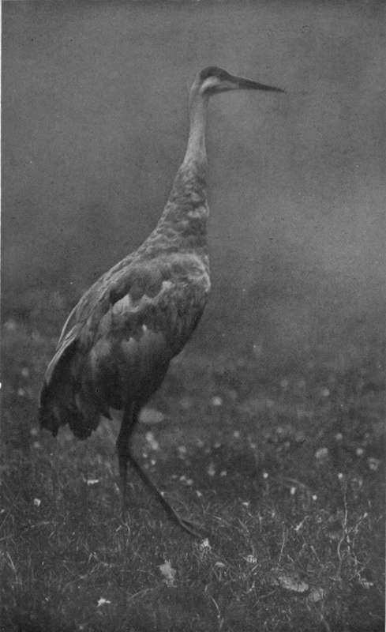

Chapter III. Seeking The Sandhill Crane
Description
This section is from the book "Wild Life In Canada", by Angus Buchanan. Also available from Amazon: Wild Life in Canada.
Chapter III. Seeking The Sandhill Crane
One evening in May found us quietly moving along the east shore of Lake lie k la Crosse, when the sun was lowering in the west and a soft, damp-tempered haze hung around the bottom of the dome of the sky. We were paddling along easily, enchanted in a measure, by the scene and sound of our unbounded surroundings. The setting sun still lit the shore ahead, enriching with the colour of gold the fresh young leaves and the white trunks of the cottonwood trees, till they were fair and fantastic as fairyland should be; while, on the lake, moved the low murmuring lap of gentle waves coming and going in company with the light northern breeze, and that made a laughing trickle as they broke on the prow of the canoe. So intense was the mystic hush of evening, and unpeopled northland, that we almost felt guilty that we would be discovered in our quest-that quest that was not for fairies, but for something almost as elusive : the haunt of the Sandhill Crane.
To-day, to-morrow, or the next day, we hoped to have luck and find that which we were searching for, but who could tell!
Until an hour after sunset we kept on, listening, hoping that the lone call of a crane might be borne down to us on the breeze--But no ! nothing gave us hope-nothing ; and the day was done.
Seeking night camping-ground we ran in where the shore was bad, for we had to make a landing somewhere on a shore composed of gravel, and granite and sandstone boulders. But the ingenious Joe jumped ashore, and while I held out in deep water, cut and laid a bed of spruce boughs at the water's edge, and on that the frail craft was smoothly grounded, emptied of her load, and carried ashore as wind was rising.
The country behind the east shore where we camped, and which we were searching along, was generally low and, although the map in my possession was blank, we knew it must contain many forest-bounded lakes, absolutely secluded from the disturbance of red man or white; and it seemed possible that if any cranes were nesting in the interior they might at some time come out near this greater sheet of water, and perhaps, if seen, betray the secretive locality they inhabited. To go haphazard into the forest to search would be as vain as " to look for a needle in a haystack," requiring many months to attempt, without any certainty of any success.
Two days later found us groping in the forest, searching for unknown, unnamed water, through country that had not even a game path to show us our possible destination. The evening before we had heard a crane call, clear and unmistakable, from high in the sky over the forest. The call had been repeated ; had grown nearer and louder until, at last, we had seen the great winged bird come into sight, and, ultimately, pitch on the shore of the lake. Breathlessly then we had watched and waited, for it was as if we were searching for gold and were feverishly near to it.
The Sandhill Crane
For a little time the bird had pecked among the gravel, then risen heavily, got started in speed and equilibrium, and sailed away over the forest straight back into the east. The bird's manner of going had the decision of one returning to settled haunts, and we felt sure that if we could find a marshy lake somewhere in the area where the bird had flown we would be very close to the real centre of our search.
So were we groping in the forest-east for a long distance, then traversing roughly northeast and south-east. In our search we came on more than one lake and had to make wide detours in some cases to get past and beyond them, but in none did we disturb the secreted crane, and at the end of the day vain had been our search through belts of crowded forest and muskeg bog, where foothold was precarious and stepping laborious.
Throughout the day we covered a large extent of country and were disappointed to have seen nothing of bear, moose, deer, or other animals indigenous to this territory. But where areas of forest are great and closely grown it is really seldom that one sees big game in summer-time. In fact, at this season, one might often be misled to believe that there are none. However, that would be a rash assumption : there is game in plenty, though to-day was a blank one, and all that we disturbed was an innocent, awkwardmoving porcupine, feeding among the branches of a poplar tree, and a brooding spruce grouse which we flushed from beneath an alder tree, where six eggs reposed on a shallow gathering of dead brown leaves.
Over the evening camp fire we were forced to wonder if, after all, we had made a mistake, and were to suffer the disappointment of an error of judgment. Joe, no longer actively young, was feeling tired and stiff after the long day on the trail, and was plainly sceptical and inclined to be disheartened and give up. I, on my part, was prepared to doubt my judgment of the day before -the bird, after all, might have been a solitary one without mate or settled haunt, an outlaw male roving broadcast where it willed, free and restless as the four winds of the wilderness.
In the early morning, while the dew yet lay white on the undergrowth, and mists lay cloudlike over the muskegs in the hollows, we were out of our blankets and preparing to strike camp.
We had decided to give up : to go back to the canoe, and continue on the long north trail.
We were eating our hasty breakfast-tea, bannock, and a slice or two of fried salt pork- when suddenly we both started to our feet, each, in excitement, exclaiming quite needlessly " Lord! what was that ? " as clearly and closely the call of the lost crane vibrated through the morning stillness. The sound came from the north-east, no distance ahead. Astonishment and delight lit up our faces; though the incident decisively showed us how near we had been to utter fools, in giving up when within reach of our rare and elusive quarry.
Continue to: